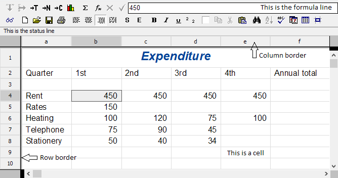
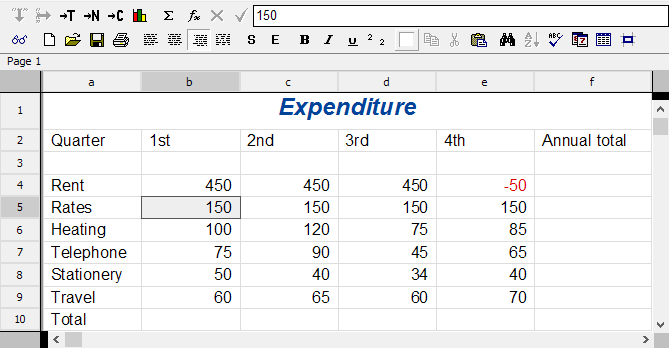
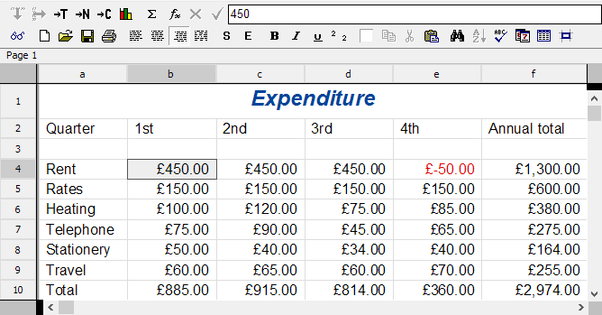

Click the
tool button on the toolbar or press
Return↵ to update the spreadsheet. You will see the new value 85 appear in cell E6.
Click the
tool button on the toolbar or press
Return↵ to update the spreadsheet. You will see the new value 85 appear in cell E6.
This chapter provides an introduction to the basic spreadsheet features which Fireworkz contains. If you are new to using Fireworkz or to using spreadsheets, you should work through this chapter.
Topics covered include:
Load the example document Accounts from the Tutorials directory. The following window will appear: 
The file contains the simplified accounts of a small business. Some categories of information have already been entered. However, not all the details have been filled in. You will be entering more text and numbers to the spreadsheet and performing some calculations to add up the columns of figures.
Each piece of information appears in a box called a cell. Some cells contain text, and others contain numbers. The two types of cell behave in slightly different ways, as you will see when you work with them.
In this spreadsheet, the cells around the top and left-hand edges of the page are text cells, and the others are number cells. You do not have to define cells to be one type or another - Fireworkz does this for you automatically, depending on what you type into the cells. Similarly, if you edit a cell and change its contents from a number to a piece of text or vice versa, Fireworkz will automatically change the cell type.
Within each spreadsheet each column and row has a unique heading letter or number. This enables each cell to have a unique address, formed by its column and row identifiers. For example, the cell at the intersection of column A and row 9 is referred to as cell A9.
Many operations you carry out in a spreadsheet are done by entering a function in one cell, and giving it the cell reference(s) of the cell (or cells) containing the data. The function is a command which performs an operation on the data, such as adding it up, or working out the average. The cell containing the function then displays the result of performing that calculation on that data.
To enter text, a number or a function into a cell you need have to make that cell the current cell. You can tell which is the current cell in a number of different ways:
When you enter text into a text cell, you type it straight on to the spreadsheet page.
As you can see, there are still a lot of blanks in the number section of the spreadsheet to fill in before you can calculate the totals.
Numbers are entered in the same way as text:
Enter some more numbers into the following cells:
| Cell | Number | |
|---|---|---|
| C9 | 65 | |
| D9 | 60 | |
| E9 | 70 | |
| E7 | 65 |
Two of the existing numbers need correcting. There are two methods of editing numbers, each of which will be covered below.
The first method is to use the formula line - this is the large blank area at the right of the top row of buttons on the toolbar:
Click the
tool button on the toolbar or press
Return↵ to update the spreadsheet. You will see the new value 85 appear in cell E6.
Another, simpler, method of altering numbers is to use in-cell editing. This allows you to change the numbers directly in the cells as though they were text.
To turn on in-cell editing:
Now, editing numbers becomes much simpler.
Note that the negative value appears in red. The base style being used specifies that negative numbers should be preceded by a minus sign and also have the Negative style applied to them. If you examine the Negative style, you will see that it is defined to display text in red.
When you have decided which of the methods of editing numbers that you prefer, you should set or clear the Edit in cell option of the Choices dialogue box as appropriate, then click the button. Then, whenever you start up Fireworkz, your selected method will be the default.
Cell E8 is still blank. However, the number to enter there, 40, is the same as the number in cell C8. Rather than type in a new number, you can copy the number from cell C8 to E8.
You will notice that you still have not entered the figures for the Rates in row 5. This is a fixed cost, the same every quarter. You do not have to enter the number in every cell individually. Instead you can fill the cells.
To fill a group of cells you must first select the group of cells to fill. Groups of contiguous cells are called ranges. There are two methods of selecting a range of cells.
The first way:
The second way:
 When a range is selected, the
and
buttons on the
toolbar become illuminated to indicate that they are available.
When a range is selected, the
and
buttons on the
toolbar become illuminated to indicate that they are available.
 These buttons enable you to enter the same number into several cells at once.
These buttons enable you to enter the same number into several cells at once.
The data to copy must appear in the first cell in the range, either the top cell selected for or the left-hand cell selected for (as in the current example).
Click the
tool button on the toolbar.
You will see the number 150 appear in all the selected cells.
 Click the
tool button on the toolbar
to remove the selection.
Click the
tool button on the toolbar
to remove the selection.
Your spreadsheet should now look like this: 
There are some blank spaces left in the spreadsheet for the totals. Adding up columns and rows of numbers is one of the most common operations performed with spreadsheets. Because it is so useful, there is a button on the toolbar to enable you to total columns or rows automatically.
To do this, all you need do is select the cells you want to total, plus a blank cell at the end to display the result in.
For example, to add together the numbers in column B:
You need to do the same for columns C, D and E. You can speed this up even further as follows:
Finally, you need to add the contents of rows 4 to 10. You can do this in one operation as above:
If you click on cell F10, you will be able to see in the formula line the way that the button works. The formula line will read:
sum(b10e10)
The function which performed the operation is mentioned first, followed by the cells on which it operated, in this case the range B10 to E10.
A slower but simpler method of getting the same result would have been to type in the formula line
b10 + c10 + d10 + e10
But this would have taken much longer and is more prone to typing error.
Another benefit of using the sum() function is that if you later insert extra columns into the range covered by the sum() function, it automatically updates to include the extra columns.
The spreadsheet is now full of data, but it is unformatted. You need to know more about numbers than the numerals to understand them; if they are money, what currency, if they are a percentage, and so on. Formatting the numbers makes them easier to understand because you know more about what the numbers represent, and about their size.
The numbers in this spreadsheet are, in fact, currency and should be formatted as such.
Formats are applied to cells using the Style system. This is a feature of Fireworkz which allows you to collect formatting information and give it a name, and then choose the name from the list of styles to apply to any section of your spreadsheet.
You could have entered all the numbers directly in a currency format. For example, instead of typing 60 into a cell you could have typed £60.00. This would have been recognised by Fireworkz as being a number entered in a known currency style.
Often, as in this example in which all the numbers represent currency, it is quicker to enter them as unformatted integers and convert them all to the same currency format afterwards:
 Click the
tool button on the toolbar.
You will see a list of available styles. Several styles have already been
defined in this document; it is possible to create new styles if you need them,
but the ones required for this example have already been set up.
Click the
tool button on the toolbar.
You will see a list of available styles. Several styles have already been
defined in this document; it is possible to create new styles if you need them,
but the ones required for this example have already been set up.

In this tutorial you learned to:
The next chapter provides more information on working with numbers, including writing formulae and using functions.